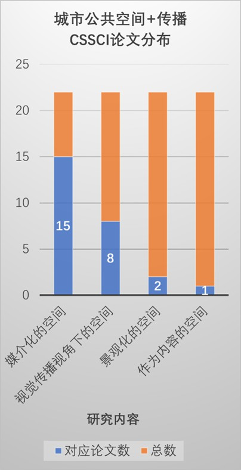

研究背景
要研究城市公共空间，我们不妨从公共空间的历史谈起。其实，“城市”这个用来描述人类大型聚落的地理学名词，本身就已经包含了公共空间的一种重要类型——市，即集中进行交易的场所。
自春秋至隋唐，中国古代城市发展经历了封闭市的阶段，尤以唐王朝的东西两市为代表，体现了传统社会农商政策与对工商阶层的控制。北宋中期后，封闭市逐渐被街市取代，城市生活开始开放与活跃，标志着中国古代城市市民阶层的诞生。商业场所成为市民生活的中心和最重要的公共空间，至今仍在中国城市中体现。
此外，还有居民交流沟通的空间。庙会源自寺庙，在宋代成为独特的文化活动，至今仍在继续为市民提供娱乐空间。明清时期的会馆以家族院落形式为基本，打破地域限制，成为新型公共空间。文娱生活方面，开放的街巷为民间艺术表演提供了新空间，形成了固定的演出场所，如瓦子。园林作为公共空间，提供了景色宜人的休憩游园场所。值得注意的是，与西方城市重广场不同，中国古代城市的核心是宫殿或府衙，公众很少能够进入这些封闭的空间。总体而言，古代城市公共空间呈现出分散衍生、以商业娱乐为主、内向小尺度、世俗性质的特点。
尽管中国近代的集会活动主要发生在城市街道，城市缺乏用于市民政治生活的公共空间，但在1949年后，这一状况发生了彻底的改变。新中国成立后，北京作为首都，政治公共空间的建设也提上了日程。如天安门广场在修缮与扩建后，成为了具有历史意义的城市广场，不仅是北京的公共空间，更是全国的公共空间。
如今，中国城市从大都市到小村镇，各类公共空间如商业街、城市广场、停车场、公园绿地和运动场等不断涌现。这种变化反映了中国经济的迅猛发展和城市化进程的加速。居民人均可支配收入的增加提升了大多数城镇居民的生活水平，从“站起来”到“富起来”，从“吃饱饭”到“有闲情”，中国的每一个城市广场都展现着这一进步，就如广场舞成为当今中国城市公共空间最具代表性的活动，生动展现了城市公共空间的丰富多彩。而城市公共空间的丰富活动正塑造国家的核心价值观，展示出国家的繁荣、多元文化和时尚面貌。城市公共空间作为彰显国家形象和文化的有力工具，非常具有研究价值。
文献梳理
城市公共空间研究
从社会空间到城市公共空间
在社会学自 19 世纪兴起至今的一百多年里,社会学家们的空间想象从未间断过。 空间的概念，随着法国社会思想家的深入探讨，逐渐延伸向更抽象的“社会空间”的范畴。无论是布迪厄的“场域”还是列斐伏尔的“空间的生产”，他们都认为社会空间相对于其他概念如社会结构、社会系统和社会网络，关注的是行为主体、位置和它们之间的关系。它强调了社会空间的结构性，受到了马克思主义理论的影响。
齐美尔、第一代芝加哥学派以及戈夫曼的社会空间理论对社会空间的理解有所不同，认为社会空间是人们进行社会互动的场所，关注社会结构对个体行为的影响。齐美尔认为社会空间具有内聚性，存在有意识的边界，强调空间的内部关系。社会距离在他的理论中不仅仅是物理距离，更涉及人际关系的情感维度。戈夫曼则通过《公共空间的关系》进一步研究了个体如何组织周围的空间。[[[1]]
城市公共空间作为一种具体的社会空间，是1960年代在美国城市问题尖锐的时期随着简·雅各布斯等规划师的对维护市民权益的抗争中逐渐被接受而广泛使用起来的。在1970年代，城市“公共空间”形成一种概念，并“逐步成为城市及相关学科探讨城市问题及建成环境与社会关系的平台”。[[[2]]在李德华等编著的《城市规划原理》中，城市公共空间被定义为供城市居民日常生活和社会生活公共使用的室外空间。它包括街道、广场、居住区户外场地、公园、体育场地等。此外，书中还提到城市公共空间的广义概念可以扩大到公共设施用地的空间，例如城市中心区、商业区、城市绿地等”。这一公共空间定义基本同室外空间相同。
不管是生产的空间社会学还是情景的空间社会学，往往都是直接对空间进行研究，而对在空间中活动的“人”有所忽略。营立成[[[3]]（2019）提出了“使用—体验”的空间社会学的初步构想，从空间参与者的角度重新解释空间的生产与空间的情景。这一构想的提出，为对“人”的研究提供了新思路。城市公共空间同样继承了这样的研究方向，对公共空间本体的概念、属性、特征和判定等成为了城市公共空间研究关注的重点，而对享用城市公共空间的居民方面往往疏于研究。近年来，学界从使用感知和供给机制方面对居民方面进行深入研究，刘儒等[[[4]]（2022）把居民感知作为测量空间正义的因素，探索从居民态度入手优化空间正义的方案，填补了以往空间研究中缺乏微观定量研究的空白。桑劲等[[[5]]（2023）提出除了应用政府直接供给公共空间这样“自上而下”的供给机制，政府还需要激励经历“价值发现——主体行动——政府响应——制度演变”四个阶段的“自下而上”的供给机制。在这个机制中公众是作为供给主体而被研究的，也可以视为对城市公共空间的居民方面研究的补充。
公共空间与艺术
公共艺术的概念最早起源于20世纪60年代的美国，并在20世纪90年代首次在中国引入。早期对公共艺术的理解主要从艺术学的角度出发，将其视为一种用于美化环境和装饰空间的艺术形式。[[[6]]
进入21世纪以来，中国的公共艺术研究经历了一次显著的“社会转向”。杨文会[[7]]（2004）关注中国现代城市的发展与公共空间艺术的历时演进，强调公共空间应与自然环境有机结合。周成璐[[[8]]（2005）以社会学的视角理解艺术的公共性，发现“公共空间”的权力问题受到公众高度关注。邹锋[[[9]]（2005）认为中国经济与社会的发展使得“公共艺术逐渐由定义国家价值传统的精英形态，向关注公众审美的大众方向发展，其发展始终贯穿着强烈的社会性”。
孙振华[[[10]]（2009）更进一步提出了公共艺术的核心观念，包括对公共性的追求、社会学的转型、以及地域和场所的有针对性。他认为，公共空间的规划必须得到社会研究的支持，以全面了解艺术对公众的影响。这种“社会转向”反映了中国经济和社会的发展，使得公众更多地融入了对公共空间的研究中。
公共空间与传播
城市形象与大众传播的讨论由来已久。但城市公共空间的传播研究是伴随着中国公共艺术的“社会转向”逐渐形成的，具有一定的同步性。因此，城市公共空间的传播研究同样将视觉表达作为重要研究对象。赵君香[[[11]]（2015）用视觉传播的语境探索博物馆的公共空间设计，提出了视觉传达、视觉审美与视觉秩序的相统一。林元城等[[[12]]（2021）通过实证研究发现宣传类户外广告通过视觉表征生产情感空间，丰富空间治理。
当然，伴随智能视觉技术与数字传播技术的发展，城市公共空间的传播研究聚焦向媒介化的城市公共空间上。苏状[[[13]]（2012）和陈霖[[[14]]（2016）分别对公共屏幕和博物馆展开研究，提出公共空间的作为信息传播和文化展演的媒介，对城市的建构和认同具有重要意义。严亚[[[15]]（2017）提出“城市空间在与身体的结合中被建构为‘场景’,身体在‘场景’中被观视。”青年具有参与城市空间的愿望，也在媒介化的城市空间中解构着传统的"中心-边缘"城市结构。潘霁[[[16]]（2017）则从地理媒介的维度，提出媒介技术将空间元素和文化历史按不同城市的逻辑勾连起来，媒介与城市生活经由日常实践的融合不断创造出城市新的交往时空。汤筠冰[[[17]]（2020）总结了城市公共空间作为艺术对象、公共领域和传播媒介在传播学、艺术学等领域的发展，从视觉传播视角审视城市公共空间,其视觉表征体系在公共领域中不断进行着视觉表意实践。
此外，一些学者已经开始关注技术对城市公共空间形成的景观社会产生的影响。李佳一[[[18]]（2013）在其研究中提出了一个有趣的观点：“消费文化、娱乐文化、视觉文化和新媒体的发展推动我们社会转型为景观社会，作为时代特征和城市文化外衣的城市文化景观也随着社会转型而重新构建”。这一角度强调了技术、文化和社会转型之间的紧密关系。
然而，目前对城市公共空间作为传播内容以及城市公共空间的客体的研究仍然相对有限。于爽等[[[19]]（2017）在其研究中指出：“城市影像反映现实化的生存空间，建构媒介化的想象空间”，将影像视为承载着城市内容的媒介，同时也强调了构建“可沟通城市”作为一种互动、对话的人际沟通新路径的重要性。尽管这些研究提供了对城市公共空间与传播关系的一些启示，但对此领域的深入研究和跟进仍然亟待发展。
城市公共空间的传播研究整体上也存在一定的空白。这一数据图表突显了当前研究的某些方向相对较少的状况，表明在这个领域中还有许多未被充分挖掘的潜力和机会。未来的研究可以进一步深化对城市公共空间与传播之间复杂关系的理解，特别是关注传播的客体及其对城市公共空间的需求和态度，以推动这一领域的发展。
城市公共空间与国家形象
国家形象是特定国家的历史与现状、国家行为与活动在国际社会和国内民众心目中形成的印象和评价。[[[1]]
城市化是21 世纪以来加速中国现代化进程的主题之一，但是中国城市形象却存在“千城一面”的窘境。同时，在当前新的历史时期,崛起的中国亟待塑造和传播大国国家形象。城市形象与公共空间如何勾连成为一些学者的研究目标。郑晨予[[[2]]承载力和互联网承载力的基础上，提出“城市形象是国家形象承载力的重要接承体之一,而城市形象虚拟塑造则是承载国家形象的关键可塑部分”，并进一步提出了“一叶知秋”与“百花齐放”、“自强不息”与“厚德载物”从城市形象塑造到国家形象建构转向的四种范式。潇潇[[[3]]（2020）基于新媒体时代的背景，强调新媒体时代为国家形象与城市形象的互动提供了良好的条件，主张要打造符合国家形象的城市形象，充分利用新媒体的力量，将城市形象传播到更广泛的受众中。谭震[[[4]]（2021）则认为城市形象与国家形象是共生共塑、个体与整体的关系，深入探讨了城市形象对国家形象建构的四个功能维度，包括具象功能、情感功能、体验功能和认同功能。
具体的城市公共空间与国家形象的关系以往研究较少关注，但也最近也开始被重视起来。汤筠冰[[[5]]（2020）从视觉传播出发分析了城市公共空间上的国家形象，他认为城市公共空间通过雕塑、艺术、广告等视觉元素，成为国家形象建构的关键平台。这些元素不仅呈现地域文化，更通过大众媒介的传播，塑造国家的核心价值观，展示出国家的繁荣、多元文化和时尚面貌。这种视觉形象的建构既是对国家认同感的表达，也是一种国际传播和文化输出的方式。此外，从艺术、媒介到智能的发展阶段，公共空间通过不同形式的视觉形象建构，见证了城市、国家的现代化过程，成为国际舞台上彰显国家形象和文化的有力工具。
这一研究领域的不断深入将有助于我们更好地理解城市在国家形象建构中的作用，为塑造积极向上的国家形象提供更为有效的路径。在新的历史时期，中国的崛起使这一研究显得尤为重要，也将为全球城市形象与国家形象的互动关系提供新的范本。这种关注城市公共空间与国家形象之间关系的研究有望为国家形象的塑造和传播提供更加全面深入的认识，为中国城市形象的多元发展和国际传播贡献新的思考和方向。
综上所述，过去的城市公共空间研究主要聚焦于探讨空间本身的属性，却相对忽略了空间参与者——“人”的研究。这在城市公共空间与传播的研究上呈现为对城市公共空间作为传播内容以及城市公共空间的客体的研究不足的现象。特别是在城市公共空间与国家形象的关系方面，研究还尚处于初步阶段，需要更多关注传播客体的层面。因此，我们的研究将聚焦于城市公共空间中的传播客体，重点关注其作为城市公共空间参与者和信息接受者的角色，以深入剖析城市公共空间对国家形象建构的影响，为更全面有效地构建国家形象提供新的思路。
研究方法
案头研究-—文献分析
实证研究-—定性与定量结合
理论框架
使用与满足
使用与满足理论关注个体在选择和使用媒体时所追求的目标和满足感。这理论强调了受众对媒体的主动性，强调他们在选择和利用媒体时是有目的、有意识的，并通过这一过程获得特定的心理和社会满足。在城市环境中，公共空间的设计直接塑造个体选择和互动的场景。通过创造吸引人的环境，城市设计引导受众在空间中寻求休闲、社交、文化体验。设计多元化的城市公共空间，满足了不同人群的需求，促进社区凝聚和文化多样性。这样的设计呈现出宜居、文化丰富的城市形象，进而塑造积极国家认同感。
我们将运用该理论探讨如何做出更能满足受众的城市公共空间设计。
记忆之场
记忆之场理论是由社会学家皮埃尔·诺拉（Pierre Nora）提出的概念，他在《记忆的地理》中系统阐述了这一理论。记忆之场是指那些能够唤起集体记忆、承载历史和文化意义的场所，它们成为人们共同记忆的象征。将记忆之场理论融入城市公共空间的设计中，意味着要创造那些能够成为集体记忆载体的地方。通过城市公共空间的规划，我们可以营造具有历史传承和文化内涵的场所，通过独特的设计元素、文化符号，激发人们的历史记忆和文化情感，使之成为人们共同感知、回忆的场景。这些场所不仅仅是物理空间，更是连接过去、现在和未来的纽带，这种设计不仅在城市层面强化了国家形象的历史渊源，也通过共享的记忆体验增强了国家形象的凝聚力。
我们用这一理论分析具有历史和文化内涵的城市社会空间，并探索城市公共空间设计的可持续发展。
“使用—体验”的空间社会学
“使用—体验”的空间社会学是提出中国学者营立成的理论构想，该理论源自对列斐伏尔的空间的生产和吉登斯的结构化理论对空间研究路径的影响。其核心概念是关注人们在空间中的实践行为和感知体验。这一理论视角将焦点从传统的空间结构和形式转移到人们对空间的实际运用和感知上，强调了空间的实践性。列斐伏尔强调空间是社会实践的产物，“使用—体验”更加强调个体在空间中的实际运用和感知。吉登斯的结构化理论关注社会结构对个体行为的影响，而“使用—体验”理论则侧重于强调个体对空间的主观实践和体验，从而引入更多的主观维度。由此，“使用—体验”的空间社会学包含三个方面的实践分析：1）人对空间的感知、利用和互动；2）利益集团依据他们对空间的感受和情感投入，参与到空间的治理中；3）网络空间中人的传播活动等使用行为。
我们并不忽视由空间实践、结构化理论等形成的“行动—结构”的理论路径，并运用其分析城市公共空间的现状。而我们也会“使用—体验”的理论分析人们在城市公共空间进行的实践和体验，考虑城市公共空间设计如何鼓励人们的享用公共空间、参与社区共建、助力形象营造。
案例分析—中国城市公共空间现状：以北京市公共空间为例
作为中国的首都，北京承载着全国政治中心、文化中心、国际交往中心与科技创新中心的职能。党的十八大以来，沿着习近平总书记擘画的“坚持和强化首都全国政治中心、文化中心、国际交往中心、科技创新中心的核心功能，深入实施人文北京、科技北京、绿色北京战略，努力把北京建设成为国际一流的和谐宜居之都”宏伟蓝图，北京在“增减”之中，推动深刻转型，实现创新引领，努力把为人民造福的事情办好办实，不断增强群众的获得感幸福感安全感[[[6]]。一方面，首都的特殊性使其在国际传播与对外交流方面有着制度优势与设施优势，承载着塑造新时代国家形象、增强中国国际影响力的责任；另一方面，承载着改善人民生活环境、建设宜居之都的责任。
因此，本组以北京市为研究主体，通过理论分析与实证研究相结合的方式，主要针对以下三个问题进行探究：
（1）国家希望建设什么样的城市公共空间
（2）民众希望获得什么样的城市公共空间
（3）城市公共空间与国家形象传播的现状、优劣与改进措施
20世纪70-80年代初，社会学家开始把空间作为单独的研究对象，并认为人类社会中不存在纯粹的自然空间, 则所有空间都是社会性的[[[7]]，由此诞生了空间社会学理论；宗海勇[[[8]]（2018）通过分析各种研究路径的空间社会学，将空间的实践性、社会性、人本性、历史性作为认识空间的重要属性。吴欣彦[[[9]]（2023）在探索乡村公共文化空间整体形象建构与传播路径的研究当中，将公共空间的发展分为保护、新建和改造三类。
该部分的分析旨在从宏观视角分析问题（1）。
保护—以圆明园为例
北京市重点文物保护单位 历史性
中国文化遗产研究院院长柴晓明曾说，“‘修旧如旧’‘最小干预’是文物保护的国际共识。”“修旧如旧”就是指在修复之后最大程度地恢复文化遗产原初的状态，使其可以真实地展示历史原貌。以圆明园为代表的文化遗产和文物保护也遵循着“修复如旧”“最小干预”的共识原则，坚持原真性保护。（包括物质层面；文化层面；精神层面和文化功能层面（张成渝,从原真性看圆明园遗址的功能分区展示,2010））
（用记忆之场？身份认同）诺拉在《记忆之场》一书中指出记忆之场是指那些能够唤起集体记忆、承载历史和文化意义的场所，它们成为人们共同记忆的象征。圆明园建于清朝，距今已经有三百多年的历史，因此作为中华民族的记忆之场，它有着一定的时空体量。圆明园在清末被侵略者火烧后已经失去了它的本来样貌，但是即使是在技术已经发展到能够恢复出圆明园的原貌，对于圆明园遗址的保护也一直是要求保留被侵略的迹象，这是因为这使得圆明园不仅仅是中国园林艺术的符号，更是中华民族曾经被侵略的国难史实的一个具象缩影，成为了一个具有历史教育意义的记忆之场。
圆明园遗址作为传递当时亲历者的创伤记忆的媒介场所，使得这种记忆在历史发展的过程众成为了中华民族的民族创伤记忆，即群众性的集体记忆，具有了公共性的特质，坚持完成记忆纵向的代际传递。时空体量和集体记忆赋予它在今日之语境中被重构为集体身份认同的参照框架。因此圆明园本身作为一种园林艺术的文化象征，和它遗址承载的民族创伤记忆被整体化，升华为一个完整的民族符号，通过集体记忆的延续成为民族身份认同和文化认同的象征。
文化记忆之所以能凝聚国族认同， 在于一个群体从这种知识储存中获得关于我们的整体性和独特性的意识，一种肯定(我们是谁)或否定(我们不是谁)意义上的认同决断得到界定的。[[10]]集体记忆是民族认同，国家认同建构的重要中介。党的二十大报告指出，国家形象对内关乎国家认同、社会团结、政治秩序、政策支持。因此保护类型的公共空间作为历史文化符号对内强化中华民族的身份认同，生成共同体意识与情感，完成了“保护类公共空间——集体记忆——民族认同——国家认同——国家形象”的传导路线。（反思：国家认同到国家形象的传导的研究缺少，这一传导过程目前还是抽象的心理理论层面？）
建设—以 the box 为例
the box 全称为“the box 朝外年轻力中心。据北京日报报道，总策展人称：“URF所提出的CURETAIL解决方案，以策展型零售定义了全新商业空间的“人、货、场”的关系。空间作为策展的场景，品牌和商品则成为展的一部分。在这里，消费不单是交易，零售不只是卖货。将策展转化成零售新力，以场景化，游戏化，策展化以及自媒体化的特点，给消费者更沉浸式的文化消费体验，让参展方可以最大程度实现闪变，跨界和故事的效果。”“THE BOX朝外不是传统意义上的购物中心，而是一个秀场或者舞台。”
换言之，自被建设以来，the box便在商业之外同时承载了文化交流、人本沟通的功能。宗海勇认为空间的人本主义批判路径“将人及其所处的环境作为中心, 强调人在空间中的主体能动性, 寻找人类在地方、日常生活中体验, 理解并发现被文化、意识、背景等因素所影响和限定的价值与意义。”
因此，我们需要关注the box出现带来的两方面影响：
首先，它为青年趣缘群体的线下交流提供了实体空间，同时为年轻人的个人爱好提供了秀场。空间本身有着极高的自由度，能够容许参与者进行一定程度上的更改，而这种更改是由人的自由意志决定的，某种意义上实现了人在空间中主体能动性的施展，体现了将人做为中心的理念。因而空间的人本性在the box得到了诠释。
然而，当思考到空间对个人的反作用时，我们不得不考虑到空间使用者和观望者两方：对于长期使用该空间的年轻人而言，the box的底色是商圈，“文化”在此被迫充当促进消费的手段，成为了掩饰资本入侵的面纱；消费主义价值观会很大程度上影响甚至改变参与者思想；对于不直接使用该空间，但能够接触该空间的人而言，这种群缘群体组成的文化更可能加重其对年轻人的负面刻板印象，造成人际间与代际间进一步意识形态冲突与沟通障碍。
改造—以798园区为例
列斐伏尔强调：从一种生产方式到另一种生产方式的变化就必定伴随着一个新空间的产生。798艺术区的诞生有其特定的历史背景，印证了北京乃至中国社会生产方式的巨变，是北京市建筑改造的典型案例。
上世纪50年代，我国认识到建设现代化工业体系，特别是本土高精尖通信设备厂的重要性，在苏联的援助下于“一五”期间建立了“国营718联合厂”；1985年以后，由于资源消耗、环境污染等因素，全球工业发展周期步入衰败期，传统工业生产面临转型淘汰。“时代的阵痛”直接导致718联合厂由盈转亏，大批工人下岗，厂房闲置；直至2002年前后，随着闲置厂房被逐渐租赁给艺术群体，该地区初步实现了从“718联合厂”到“798艺术区”的转变[[11]]。
时至今日，798艺术区已经成为了北京重要的城市公共空间，但考虑到其“联合厂”到艺术区的转变，“免费”与“付费”的平衡，我们不得不担心798是否为两种意识形态斗争提供了角力场。
（一）精英美学的大众化之路
798 从废弃工厂到当代最大和最有影响力的当代艺术集散地的“ 再造”过程，集中凸显了在全球化背景和市场语境下，民间力量开始超越早期的理想主义阶段的“ 乌托邦”追求，并将艺术的追求和当下的社会及人的生活状态相结合，开始了对自身话语权的主动诉求。 其“ 再造”的理念和行动以及将 798 艺术区以一种开放的公共性的姿态推向公众的方式，既有极大的前瞻性，也有积极的实践性。
也就是说，在没有出现艺术区以前，艺术基本是被上流的精英阶层所垄断，798 艺术区的出现使当代艺术具有了公共艺术的教育功能， 这成为公众了解和进入当代艺术的重要桥梁和途径。 当代艺术及其艺术家开始了从“ 地下”到“ 地上”、从边缘性进入公众视野的转变。 通过艺术区和画家村新的功能拓展，当代艺术终于开始进入公众生活，其意味着艺术开始融入人们的日常生活空间[[12]]。
（二）消费主义入侵社会空间
然而，798的艺术大众化之路同时伴随着消费主义的入侵和话语霸权体系的建立。一方面，798作为“优雅”“小资”的特征符号型塑了一批人对于“艺术”的定义和自我感知：经常到 798 消费也形成了一种身份认同，一般是白领和具有小资情调的人的所在地，人们到这里不仅仅是购物，也是在感受一种情绪和文化认同。至此，艺术和“时尚”“消费”一样构建了新的社会阶级，能否理解艺术、艺术投资多少成为了决定个人社会位置的重要依据；另一方面，798作为空间为展览、歌剧、舞剧等提供了不断推陈出新的场所（space），很多情况下公众不得不付费购买最新的阅览权而舍弃被定义为旧的艺术形式，这种针对艺术的“折旧”恰恰是消费主义滋生的土壤，一种“资本主义”式的买卖关系已经成功在798生根发芽。
以798艺术区为引，实际需要引起关注的是更为广泛的社会问题：即产业结构改革问题。2013年，我国正式实施了《全国老工业基地改造调整规划》，将“一五”、“二五”和“三线”建设时期国家布局建设、以重工业骨干企业为依托聚集形成的工业基地进行调整改革，规划期为2013-2022年[[13]]。至今，全国老工业基地应以全部改造完成，同时也意味着承载重工业时代工人集体记忆的社区被部分转化为城市公共空间，开始承载市民服务、新兴产业、商业区块等不同职能。
然而，798艺术区的转型为人们敲响了警钟，我们需要思考：诞生于社会主义的工业厂房在当今时代还能否坚守其社会主义底色？两种意识形态究竟如何在同一空间中实现平衡？
中国现有规划的城市公共空间特征
\1. 数字化技术的应用成为热点。
大数据时代，数字技术的飞速发展为公共空间领域带来新的发展契机。以圆明园保护为例，虽然原真性保护原则要求对圆明园的修复和保护不能够回到为破坏前的原貌，但是相关部门通过数字技术完成对圆明园的修复，参观者可以借助三维扫描、虚拟现实等技术实现圆明园数字化复原。
\2. 风景园林、老工业基地等呈现融入城市社会、生态和经济结构的趋势
以北海公园为例，原先的私人园林由私人化转为大众化公园，贯彻生态文明理念，打造了一座集生态环保、传统文化、园林艺术于一体的城市公园。在融入社会和市民生活层面，北海公园提供冰嬉活动。对于老工业基地，坚持改造原则，不浪费土地资源同时也保留工业基地历史，以生态保育核为核心，先恢复后改造。3.以人为本的规划意志
实证研究
前文分析中我们已经大致了解了国家想要建设怎样的公共空间，本次实证研究主要针对的问题是
问题（2）民众希望获得什么样的城市公共空间
问题（3）城市公共空间与国家形象传播的现状、优劣与改进措施
总的来讲，本次实证研究结果成功回答了问题（3），从受众视角提出了改进建议。同时反映出，对于大众性更强的城市公共空间，民众的满意度较高；但在政治性更强的城市公共空间，特别是红色公共空间，民众的实际感知与国家所倡导的城市公共空间出现了一定程度的偏差。
定量研究—问卷调查法
总计调查获取了122份有关“北京大学生对公共空间态度”的问卷，去除21份无效问卷，总获得101份有效问卷。根据问卷结果我们基本可以获得以下几个结果：
（1）北京大学生经常去的城市公共空间主要为商业区和城市公园。
（2）大学生主要通过城市公共空间获得娱乐和放松体验
结论（2）可以看作结论（1）的目的和需求，由于大学生更倾向于获得娱乐体验和情绪放松，所以在选择参与城市公共空间时会更愿意选择商业区和城市公园。
（3）便利舒适、美观、独特、实惠成为大学生选择公共空间主要原因
城市公共空间作为一种“隐性”的传播内容与传播媒介，大学生在参与公共空间时实际上也就是一个使用媒介的过程，根据使用与满足，大学生选择公共空间必然是有自己的目的，所以我们在问卷当中调查了大学生选择何种公共空间的原因。
联系结论（1）和结论（2）以及问卷结果显示的图标信息，我们可以得出便利舒适、美观、独特、实惠成为大学生选择公共空间主要原因。
对于这一现象，我们可以用马斯洛的需求层次理论进行解释。
马斯洛的需求层次可以概括为：生理需要、安全需要、归属和爱的需要、尊重的需要、认知需求、审美需求、自我实现的需要和超越需要八阶；生理需要、安全需要、社交需要、尊重需要和自我实现需要五类 。
马斯洛认为需要层次越低，力量越大，潜力越大。随着需要层次的上升，需要的力量相应减弱。高级需要出现之前，必须先满足低级需要（不一定是100%满足）。 因而在选择公共空间时，也同样会考虑低阶的需求层次，例如出行和消费金额方面的现实层面需要。在群体方面来说，经济和社会快速发展的当代中国使得低阶层次的生理和安全需要在社会层面上已经基本被满足，更高层次的需要在渴望得到满足。尤其是在以大学生为代表的年轻人群体，自我价值的体现和满足、社交和审美的需要逐步成为他们对“外”活动的主要目的。商业园区和自然公园的城市空间又恰恰是更加能够凸显参与者的个性化追求和审美追求。
（1）大学生对公共空间的传播意愿较强
无论是互联网群聚传播（互联网其本质属性是传播主体极端多元的群体聚集性传播，即指极端多元的网络主体因事自发聚集在互联网空间中，以去结构的方式展开的传播活动，是原本非常态的社会集合行为（collective behavior）在互联网传播中的常态化，换言之，是大众传播时代的离散社会演变为互联网空间中的常态化社会聚集。 换言之，是大众传播时代的离散社会演变为互联网空间中的常态化社会聚集。）[[1]]还是与朋友之间的人际传播，大学生总体的传播意愿较强，但在具体不同分类的城市公共空间上的传播意愿的表现略有不同。大学生在互联网上传播城市公共空间时更愿意选择符合自己取向的公共空间，但在人际传播，特别是对非同一地域外的人的传播过程中，更愿意选择传播具有地域特色的公共空间。
（2）大学生对“红色文化”城市空间兴趣较低
在对初次到北京的新朋友的北京公共空间传播意愿和北京大学生在互联网上的群聚传播意愿，“红色”文化公共空间和爱国主义教育等具有官方意识形态的公共空间都在大学生传播意愿的低位，近70%的人不会带朋友去“红色”文化空间、仅不到2%的人会去爱国主义教育意义的公共空间并在互联网上进行传播。
我们经过分析认为主要有以下两个原因：
①心理回避机制
“红色”文化和爱国主义教育等一类的城市公共空间的物品总是依照所谓“科学”或“客观”的原则来分类，强烈的秩序感会在布局和视觉上给人以庄重、肃穆的心理感受，这种感受会营造出一种紧张严肃、具有压力的氛围。
同时，在中国这一类的城市公共空间所展示的历史记忆往往会有一些民族的创伤记忆，比如大大小小的革命战役、抗美援朝等，近一点的包括疫情时期的记忆。参观这一类的公共空间，往往意味着一是一段历史的重溯。在回溯历史的过程中，参观者会产生低落、遗憾、伤心等等负面情绪。更有甚者可能会产生替代性心理创伤（TV）。替代性心理创伤指的就是在目击大量残忍、破坏性场景之后，损害程度超过其中部分人群的心理和情绪的耐受极限，间接导致的各种心理异常现象。这些异常现象，通常都是出于对生还者及其创伤的同情和共情，而使自己出现严重的身心困扰，甚至精神崩溃。（刘军 首都医科大学附属医院 ）。
所以对这样的一种严肃、具有压力，而且可能会带来负面情绪的公共空间，人有可能会受到心理回避机制（在面临压力、威胁、悲伤等情感时，个体可能会选择避免思考、回避或逃避这些情感，以减轻不适。 ）的影响不去选择这一类的公共空间进行参观和传播。
②自我决定
爱德华.L .德西与理查德.瑞安共同创建了自我决定论（Self-Determination Theory）。该理论指出满足个人对自主、胜任和联结基本需要的环境条件，能够更好的增强人们的主动性、创造力以及提升人们的幸福感。
自主感：人们需要感到自己的行为是自己选择的，而不是某些外部来源强加的——他们行为的缘由，存在于他们自身内部，而不存在于某些外部控制之中。“红色”文化和爱国主义教育等一类的城市公共空间的规训和意识形态意义太过强烈，这种规训和意识形态的直接影响使得受众处于被动的局面，特别是极其需要个性化自我价值实现的大学生群体，极具排斥这类无法让自己产生自主感的公共空间。
胜任：人们都必须感到自己有足够的能力从事某些行为，以取得想要的结果。与内在动机相关的是当一个人自由地从事目标活动时自发产生的愉悦感和成就感。 在选择自由的情况下，充斥着学业压力、纠结压力、生活压力、竞争压力等等的现实局面让大学生无法在自由的时间里选择一个有压力、有压迫感的公共空间，以大学生为代表的年轻群体想要主动在参与公共空间后获得的是释放压力的结果，而现有的“红色”文化和爱国主义教育等一类的城市公共空间无法满足这一结果。
联结：人们需要在感受到这种胜任与自主的时候感受到与他人的联系。称之为联结的需要，即爱与被爱的需要，关心与被关心的需要。其实也就是一种社交的需要，只有在人际交往的过程中才能够明确地感受到爱与被爱，关心与被关心。现有的“红色”文化和爱国主义教育等一类的城市公共空间只是一场简单的、冰冷的单向信息传递，“人”的双向参与和信息的双向交流缺失。
定性研究—深度访谈
考虑到操作可行性与样本代表性，本组在中国传媒大学有计划地选择了3位大学生并对其进行深度访谈。为保障受访者隐私，本组出现的受访者姓名均为化名。
经过深访，可以总结受访者的大致信息如下：
| 姓名 | 王晨曦 | 李思源 | 张沐 |
|---|---|---|---|
| 籍贯/现居地 | 青岛/北京 | 北京/北京 | 北京/北京 |
| 学历 | 大学本科 | 大学本科 | 大学本科 |
| 公共空间偏好 | 商区、艺术区、特色街区 | 景点、体育场、博物馆 | 公园、广场、景点 |
| 传播意愿 | 较低 | 中等 | 较低 |
| 信息获取渠道 | 小红书 | 小红书 | 小红书 |
本组将从以下三个方面分析此次深度访谈的结果。
受众参与
公众喜欢什么样的公共空间？公众希望在公共空间体验什么内容？该问题的结果一定程度上反映了在公共空间认知与感受层面“国家”与“民众”间的差异，同时为公共空间吸引用户参与提供了参考意见。本次深访结果显示：民众对于公共空间内容的期待与公共空间的自身类别有着极强的相关性，在公共空间基础设施、建筑规划等硬件方面展现出共性特征，但在空间活动安排、文化特色等方面受到个人兴趣的强烈影响，展现出了较强的异质性。
基于深访结果和问卷分类，本组将根据公共空间类别进行结果阐述。
（一）商业街区与艺术区
在深访过程中我们发现，当商业街区以城市公共空间性质出现时，受访者往往会忽略其商业特征，减少购买行为，转而讲关注重点放在人本特色上；换言之，受访者认为商业街区有着文化交融的特征，不同地域的旅客与当地人的互动与沟通能够使其体会当地风土人情，真切融入当地文化。与此同时，商业街区的存在能够在一定程度上满足受访者的社交需求，“朋友相伴”成为了受访者在商业街区的常态。
王晨曦：“什么南锣鼓巷、鼓楼、什刹海就那块，因为其实特别好逛，它不是我也很难说它是为什么什么好逛，但是你就去那走什么Citywalk你就去那走，还挺有意思的，可能也不买什么……那边就是人多热闹，就是去那走，每次就走那一条线，你从南锣鼓巷你这样穿进去，然后就左转你就转到鼓楼东大街，然后你就这么绕一下，然后再绕进去就到什刹海了，然后一般就走到这，然后可能你要不就坐地铁去望风景，就再去逛街。”
张沐：“就其实南锣鼓巷这种地方基本算个景点了，我感觉就是它那一片可能算个景点群之类的吧，所以好多人说一般外地游客来的时候会逛……我有时候也去，有时候也去但是都是和朋友一块儿，然后顺便逛逛北海公园那一片”
极高的客流量为商业街道带来了双向作用：一方面，商业街道有潜力在促进消费的同时承担一部分文化输出功能，实现跨文化交流；另一方面，官方需要重视商业街区风貌，增强商业街区文化性，展现地域特色。
在针对艺术区和艺术中心的问题上，受访者表现出较为相似的特征：重视活动内容与经济支出。活动方面，新颖有趣、珍惜罕见、能够拓展知识的展览更受受访者欢迎；经济方面，受访者能够接受每次在艺术展览方面花费100-200元左右。
由于大部分受众缺乏专业美学鉴赏能力，因此在艺术类别选择方面受个人兴趣影响较大，难以得出普遍结论。
（二）景点与地标性建筑
景点与地标性建筑是外地、外国游客在参观城市时会普遍选择的公共空间。与商业街区、艺术中心等不同，景点与地标性建筑自身存在更强的政治性，是城市文化与特征的缩影；然而，游客在旅行过程中会主动回避政治性话题，因此景点及地标性建筑的文化特征与建设情况是游客最为关注的两大方向。
在基础建设方面，受访者表示自己不会在意wifi、休息区、卫生间等地的修建情况，认为这些是“可以忍忍”的，而更加重视景点自身建设与维护情况。
李思源：“我觉得如果他古建筑已经被一些历史因素，比如说当时侵略或者文化大革命期间被破坏掉了，然后他没有办法去做一个很好的重修，可以，那就像颐和园（圆明园）那边一样，就有一些断壁残垣，它也是一种美，也是让你感受到历史底蕴的一种方式，但我不能接受，他往那里面堆杂物，然后或者修一半，然后不修了，然后你能明显的感觉到一些母亲的对比痕迹在这上面，我觉得很离谱，然后我更不能接受它里面，所以太脏太乱，然后它也没有，你要么就规划，你要么就呈现它被破坏之后的样子，你别这整一点整一点。”
总体来说，受访者希望人文景点能够确保美观与整洁，或可仅开放已经过统一规划、有完善旅游线路安排和设施建设的区域，以保障游客体验感与舒适度。
对于自然景点，受访者表示多数自然景点存在的问题是景区面积过大，个人很难一次性逛完，且对于游客体力要求较高。受访者希望能够普及和推广景区观光车，为游客提供全程服务。
在文化特征方面，受访者认为应当加强景点与地标性建筑的地域特色，基于当地文化发挥景区优势，形成具有独特性、历史性与记忆性的城市公共空间，避免建筑雷同情况出现。
张沐：“我觉得现在有个事儿特别不好就是，当然也不见得都是那样，但是比如这个城市建了个什么比如钟啊，比如什么雕塑之类的，然后你在另一个城市旅游的时候看见差不多的，就觉得特别没意思。就人家的建筑是人家的，它有它的一个独特性在，要是每个地方这种建的东西都一样，那就很没必要了。”
（三）广场、公园、绿地
在受众感知中，广场、公园、绿地等城市公共空间的大众性进一步加强，此类城市公共空间已完全摒弃了政治因素与文化因素，而成为纯粹的大众休闲活动区域。
深度访谈中，受访者也体现出了对于广场、公园和绿地等公共空间的熟悉与漠视：在被问及对居住地附近小型公共空间的看法时，受访者王晨曦表示小公园“不是很重要”“没有的话也不会有影响”；受访者李思源表示觉得“规划的一般”；受访者张沐表示“不太常去”“一般是老人跳广场舞”。
该结果一定程度上说明了：当前城市公共空间使用出现了较为明显的代际区别，广场、公园、绿地等从属于居民区的城市公共空间有着特定的参与群体，即临近区民区的老年群体；青年群体相对而言不重视距离因素，有意愿前往距离相对远的城市公共空间进行活动。
（四）博物馆与非营利展览
李思源：“我是旅游一定会去博物馆。我觉得博物馆是特别能说明一个城市历史，甚至它的一些民俗特征的地方……我觉得他自己的博物馆他都设计不好，我觉得这个城市也就那样。”
在深度访谈过程中，受访者李思源展现出了对于博物馆和非营利展览的喜爱与极高的参与意愿。李思源认为有年代感与历史感、能够反映特定历史时期地区变化的展览更能够引发游客兴趣。李思源同时提出了构建受众喜爱的博物馆的几大特征：
“首先它要有一些常年的就是不动展，用来反映他自己城市的历史和这一小片地域的文化发展，它一定要有这么几个展馆是一直开的，然后它还有要有几个轮换的展，用来就是展示一个这种巡展类的东西，我觉得一个博物馆它一定要有一些场所，做好了接待和展出这些巡展的准备。
然后从光影上来讲，它光影空间的布置要合理，中国历史博物院有一个特别大的问题，从外面看你觉得它真的很大，但你进去它因为那些楼梯电梯右拐弯的设计，它实际上用来展出的空间真的很小，就给了我一种落差，还有从历史文化上他的补充科普内容要写的认真合理，不要有错误，然后也不要就一两个字，然后随便在比如说一面镜子，然后随便就告诉你这是什么，然后就没了。什么时间什么年代的，然后从哪里出来的，啥都没有。”
（五）红色公共空间
本次深度访谈的结果显示我国在红色公共空间建设及推广上仍旧任重道远。多数受访者表示出对红色公共空间的消极参与意愿，觉得“不想去”“不感兴趣”。进一步问及具体原因时，受访者表示：
“它如果纯作为一个理念性的宣传，我说句有点政治不正确的话，我没有任何兴趣，如果他配上一些比如说抗战时期一些烈士用到的物品，就哪怕是眼镜或者一些枪或者一些鞋，我就有兴趣。”
为实现更好的传播效果，红色空间与爱国主义教育需要充分考虑受众接受程度，经过对理论知识和理念宣传的充分祛魅，以通俗易懂的方式进行传播。受访者希望红色公共空间不仅限于长期的理念宣传，更可以增加物质性展览频率，通过抗战时期老物件等承载民族记忆的实际物品使公民进一步接受爱国主义教育。
受众传播
对于公共空间相关信息的获取，当代青年人呈现出极强的互联网依赖性。本次深度采访的3名受访者均表示自己在进行旅游规划时会使用小红书平台搜索相关发帖，汲取他人经验，并依据他人发帖内容规划个人旅游路线。受访者王晨曦则表示“偶尔刷到旅游帖”能够增强其旅行意愿。由此可见，互联网已经成为了重要的公共空间传播媒介，自媒体推荐已经成为了极具影响力的传播方式。因此，在将城市公共空间作为客体的国家形象传播过程中，需要充分重视互联网自媒体的力量，善加利用网红效益，多方面立体化打造新时代中国形象，反击对中国的污名化与妖魔化。
本次深度访谈同样聚焦受众传播意愿，探究了公民在参与城市公共空间后对相关内容进行互联网传播意愿与影响因素。研究结果如下：
（一）“熟人社交”主导的媒介选择
当被问及是否会就个人在城市公共空间的经历进行发文、发帖等行为时，3名受访者展现出了媒介选择上的共性：有着“熟人社交”典型特征的朋友圈成为了发布内容的主要平台，微博、小红书、抖音等社交媒体则不是受访者的最佳选择。
究其原因，受访者给出了“不常用”“没有发帖习惯”的回答。值得注意的是，受访者表示自己并不存在隐私泄露方面的担忧，而是个人不经常在社交媒体上发布内容，不习惯这种生活分享形式。
本组认为，在受访者选取时或许存在此类巧合，使得3位受访者均是社交媒体平台的不活跃用户。然而我们仍需考虑青年群体针对城市公共空间内容发帖意愿低的可能性，并由此思考在国际传播方向上的优势与不足。关于此点的建议，本组将在下文详细阐述。
（二）内容主导的空间选择
特别针对于非景点或地标性建筑的城市公共空间，其空间的软件设施（如活动）与硬件设施（如建筑美学）成为了影响受众传播意愿的主要因素。活动方面，受访者表示希望官方能够在城市公共空间定期举办活动，此行为能够极大地激发参与者兴趣，增强其传播意愿。
总体来说，存在以下特征的活动更易提升受众传播意愿： （1）美观性：活动本身应符合视听美学，呈现艺术特征。
（2）新颖性：能够拓宽受众知识，满足其好奇心理。
（3）娱乐性：受众能够充分娱乐自我，网红效应与明星效应能够进一步激发受众参与与传播。
（4）经济性：受众追求性价比更高的活动。
王晨曦：“因为最近不是阿那亚办了圣诞的活动，然后他好像是有那种点灯仪式，我当时看了之后我还挺想去的，但特别贵，一个酒店本来就贵，然后一到圣诞就更贵了，然后就没去”
李思源：“……总感觉那种色彩对比度比较强烈，或者形状比较扎眼醒目的东西，会从视觉上让我比较享受，然后也能拍出来很好看的照片发朋友圈。”
张沐：“我主要是看个什么展呀什么逛个博物馆呀之类的，会发个朋友圈。一方面是好看吧，另一方面也想着说发这些高大上的东西，显得我这人特优雅特高级。”
（三）知名度主导的空间选择
“知名度主导的空间选择”特指景点、地标性建筑等空间更易受到游客青睐。通过对互联网城市公共空间图片的大致搜索来看，天坛、故宫等知名景区图片较多，符合游客心理倾向。
景点、景区与地标凝聚了地区、城市甚至国家的文化特征与历史底蕴，是政治与文化传播的重要客体。国家形象对外传播需要进一步加强对上述公共空间的重视程度。具体内容将在下文阐述。
发展建议
本次深度访谈中，受访者对北京市公共空间发展和规划提出了两点建议：
（一）技术赋能
受访者王晨曦提及了对数字化技术赋能城市公共空间，特别是景区、古建筑等难以进行二次改造空间的期盼。
王晨曦：“北京也好多城楼，或者是那种建筑，你去看鼓楼那个楼，你就做你比如说他是个历史遗产了，你就摆在那儿，我可能也就是那么看一眼，因为它的历史价值也看不出来什么。西安那种城楼也是那样，就立在街角。他要里边办一个那种什么那种活动，就跟那种剧本杀一样那种，就那个楼里边它利用起来，然后把当年的故事编起来，然后那样的就觉得还有点意思，但它不就是进不去就保护起来了。”
在受访者看来，当前针对城市公共空间较常用的数字化技术为数字展厅，然而该方式有限地为用户提供具身参与空间，无法有效地使公共空间本身的价值触及受众。应当加强新兴技术在古建筑数字化方面的实践，将数字化娱乐作为手段，提升受众对城市公共空间的参与意愿与传播意愿。
（二）风格统一
仅针对北京市城区规划而言，受访者认为需要考虑历史与现代、建设与保护的平衡，在建筑风格上实现区域统一。当前北京公共空间的不和谐之处在于古典建筑与现代建筑杂糅，难以从空间上形成统一的文化场域。如能在该方面有所加强，或能促进公众传播意愿进一步加强。
李思源：“奥森附近和我之前不是去中国历史研究院，它那一块会出现一些非常现代化的建筑，这应该是当年修建奥林匹克公园的时候，为了契合奥林匹克主题，有一些金属化现代化，然后风格稍微扎眼一点的建筑，但它也会有一些政府一些人民的楼，它的风格就非常严肃古典，然后也会有一些博物馆类的作为试图把它塑造成拍出来红墙绿瓦这样风格的，这就是历史风格的，然后放在一起，……我特别能理解北京这个地方人很多，然后他需要完成的一些城市服务也很多，就会造成它需要建设很多建筑。然后在这个过程中，它一开始的规划肯定会被新的规划不断的抵进去东西，所以就那样，反正他也不脏不乱，我自己看不顺眼的，我自己的问题。”
总结、分析与设计
硬件规划
（一）打造宜民、宜居城市环境
在对内传播方面，当前制度上的重点仍然在于以人为目的，打造宜居城市、和谐之都，遵循当前政策导向与基本要求；然而在实际操作层面，需要多方听取民众意见，充分考虑民众在实际上生活中的需求。在此方面，本组的实证研究或可起到一定作用。
（二）立足本地文化，建设特色空间
该建议的产生基于实证研究结果。城市公共空间的物质性会在一定程度上影响其传播效果，因此要求空间自身具备可被符号化、甚至易被符号化的文化特征，彰显地域特色与国家特色。在对内传播过程中，立足本地文化的特色公共空间能够增强用户的民族自豪感与凝聚力，强化公民文化认同，提高公民文化自信；在对外传播过程中，立足本地文化的特色公共空间有利于外国个人与社会群体从多方面、多角度了解中国，进而改善当前已经形成的对中国的刻板印象，优化中国国际形象。
（三）“去设计化”，彰显个性
很多时候，人的空间行为及其背后的生活方式和身份认同无法被“设计”，只能被观察、尊重、包容、引导。官方指定的公共空间往往经过精心设计，却过度管理或过于商业化，规划后的充满规训意味的空间容易让参与者产生压力感。
传播方式
（一）构建多维度对外传播矩阵
上文提到我们需要考虑青年群体针对城市公共空间内容发帖意愿低的可能性。然而城市公共空间作为客体，不得不经过符号化过程、基于互联网平台、以社交媒体为媒介，方可实现大众传播的可能性。与此同时，在获取中国相关信息方面，外国民众获取渠道远少于本国民众，社交媒体可以说是最为重要的一环。因此，受众传播意愿在国际传播中的重要性远高于国内传播，国际传播对传者的专业程度要求远高于国内传播。因此，本组有理由认为国际传播的重点不在于鼓励普通民众参与、提高普通民众传播意愿，而在于官方需要组织精英、专业传播者与民间组织力量，通过官方媒体、社交媒体官方号、自媒体等多方力量构建对外传播矩阵，链接多方力量形成更适应互联网时代的对外传播方式。
（二）严肃与娱乐手段并行
当前我国的对外传播主要依靠官方媒体、官方账号发布内容。其优势在于能够由专业人才决定传播内容，确保中国国际形象的正向、积极、真实。然而在外国民众已然对中国产生刻板印象的情况下，官方符号的出现更有可能引发民众抵抗心理，无法实现内容有效传达，造成传播效果的下降的同时难以改变刻板固化的中国形象。因此，本组认为需要重视娱乐化手段，通过严肃与娱乐并行的方式进行对外输出。在过去的全球意识形态争夺战中，部分国家已经证明了娱乐化手段型塑意识形态的有效性，证明了通过影视、书籍、音乐等娱乐产品传递本国价值取向的可行性。时至今日，大部分普通民众仍然缺乏对娱乐型塑意识形态的抵抗能力。因此本组认为，中国的文化对外输出需要重视娱乐手段的力量，通过对上述方式的本土化改变形成适应本国国情的对外传播新范式，实现对国际民众思想的潜移默化影响。
参考文献
[[1]] 刘思达.社会空间：从齐美尔到戈夫曼[J].社会学研究,2023,38(04):142-159+229.
[[2]] 陈竹,叶珉.什么是真正的公共空间?——西方城市公共空间理论与空间公共性的判定[J].国际城市规划,2009,24(03):44-49+53.
[[3]] 营立成.迈向什么样的空间社会学——空间作为社会学对象的四种路径与反思[J].中国社会科学评价,2019,(01):50-63+142-143.
[[4]] 刘儒,陈舒霄,王迪.城市居民感知的公共空间正义测度与优化[J].统计与信息论坛,2022,37(10):89-102.
[[5]] 桑劲,潘珂,孔诗雨.城市公共空间“自下而上”供给机制研究[J].城市发展研究,2023,30(07):79-87.
[[6]] 孙振华.公共艺术的观念[J].艺术评论,2009(07):48-53+47.
[[7]] 杨文会.论现代城市中的公共空间艺术[J].河北大学学报(哲学社会科学版),2004,(04):56-58.
[[8]] 周成璐.社会学视角下的公共艺术[J].上海大学学报(社会科学版),2005,(04):92-98.
[[9]] 邹锋.公共艺术的社会性[J].文艺研究,2005,(08):143-144.
[[10]] 孙振华.公共艺术的观念[J].艺术评论,2009(07):48-53+47.
[[11]] 赵君香.视觉传播语境中城市博物馆的公共空间设计——以洛杉矶盖提博物馆为例[J].装饰,2015,(03):128-129.
[[12]] 林元城,章佳茵,李路华等.城市情感地理与空间治理:广州市区宣传类户外广告案例[J].世界地理研究,2021,30(05):1083-1095.
[[13]] 苏状.公共屏幕传播与公共空间重构[J].南京社会科学,2012,(09):88-94+109.
[[14]] 陈霖.城市认同叙事的展演空间——以苏州博物馆新馆为例[J].新闻与传播研究,2016,23(08):49-66+127.
[[15]] 严亚,董小玉.城市空间“场景”中的青年媒介想象[J].南京社会科学,2017(04):113-117+132.
[[16]] 潘霁.地理媒介,生活实验艺术与市民对城市的权利——评《地理媒介:网络化城市与公共空间的未来》[J].新闻记者,2017,(11):76-81.
[[17]] 汤筠冰.论城市公共空间视觉传播的表征与重构[J].现代传播(中国传媒大学学报),2020,42(10):25-30.
[[18]] 李佳一.论景观社会的城市文化新景观[J].艺术百家,2013,29(S2):62-68.
[[19]] 于爽,王玉玮.影像的城市空间与现代性呈现——第五届中国影视青年论坛综述[J].现代传播(中国传媒大学学报),2017,39(05):158.
[[1]] 来源：光明日报报道《新中国70年国家形象的建构》
[[2]] 郑晨予.城市形象虚拟塑造的中国化与全球化——兼论与国家形象承载力的转换视角[J].社会科学家,2016(02):29-33.
[[3]] 潇潇.新媒体时代的国家形象与城市形象互动[J].新闻传播,2020(02):108-109.
[[4]] 谭震.城市形象与国家形象建构的关系及功能研究——基于近三年对外传播优秀城市案例的分析[J].国际传播,2021(03):78-85.
[[5]] 宗海勇.空间社会学视阈下城乡空间关系演进研究[J].南通大学学报(社会科学版),2018,34(06):109-115.
[[6]] 来源：新华社报道《北京：向着国际一流的和谐宜居之都迈进》
[[7]] 叶涯剑.空间社会学的方法论和基本概念解析[J].贵州社会科学,2006(01):68-70.
[[8]] 宗海勇.空间社会学视阈下城乡空间关系演进研究[J].南通大学学报(社会科学版),2018,34(06):109-115.
[[9]] 吴欣彦.乡村振兴背景下乡村公共文化空间整体形象建构与传播路径[J].新闻爱好者,2023,(02):76-78.DOI:10.16017/j.cnki.xwahz.2023.02.024
[[10]] 路璐,吴昊.多重张力中大运河文化遗产与国家形象话语建构研究[J].浙江社会科学,2021(02):133-139+132+159-160.
[[11]] 李琳,林子苏.从“718联合厂”到“798艺术区”：时代契机与文化重构的双重历史表征[J].美术研究,2022(05):120-124.DOI:10.13318/j.cnki.msyj.2022.05.016.
[[12]] 方李莉.城市艺术区的人类学研究——798艺术区探讨所带来的思考[28][J].民族艺术,2016(02):20-27+47.DOI:10.16564/j.cnki.1003-2568.2016.02.003.
[[13]] https://www.gov.cn/gongbao/content/2013/content_2441018.htm
[[14]] 隋岩,群聚传播——互联网的本质[J].现代传播,2023.